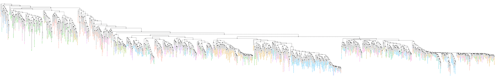

STRUCTURE IN ORAL TRADITIONS
a global dataset of folklore motifs
Egor Lappo
Outline
- Context
- Analysis with STRUCTURE
- Phylogenetic analysis
- Next steps
Who studies oral traditions?
- Folklorists, ethnographers, anthropologists
- Archaeologists, linguists, historians
- Cultural evolution researchers and biologists
Yuri Berezkin has created a global dataset that records presence-absence of folklore motifs among 958 human cultures (societies).
-
2564 motifs: image-motifs and episode-motifs
- The false wife: An ugly, old, lazy, etc. woman or a male trickster comes to man under disguise of his wife, bride or sister who is driven out, confined to the underworld, killed, etc.
- Trickster-raven: In episodes related to deception, absurd, obscene or anti-social behavior the protagonist is a raven.
- Mankind ascends from the underworld: The first people are not created but come to earth from the underworld or from a small enclosure under the earth or on its surface.
- The sun and the moon are males: The Moon is male, the Sun is also male or (much more rare) asexual.
- Many others...
Yuri Berezkin has created a global dataset that records presence-absence of folklore motifs among 958 human cultures (societies).
- 2564 motifs: image-motifs and episode-motifs
- Ascertainment bias: motifs must be shared by at least two groups
- More bias: "local" or "universal" motifs ignored
- Berezkin is not an expert, like me
Some PCA and NeighborNet analyses have been done.
Main metaphor:
groups are samples and motifs are alleles
Run STRUCTURE on the data - mixed-membership clustering.


But how do we understand this?
Tools from computational linguistics!
Relevance metric: highlights motifs most characteristic of a cluster.
Computed using estimated allele frequencies within each cluster
Slavic and European cluster

Bering strait cluster

Asia-africa cluster

Australasia-America cluster

The catch-all

Saliency
Motifs most helpful in distinguishing between clusters.
What do people care about...
and what can we contribute?
-
Peopling of the new world. Two waves of migration?
- Peopling of the new world. Two waves of migration?
- Linguistic vs. geographic barriers.
- Contact zones. Admixture.
- Innovations in folklore.
- Analysis of motifs, not groups.
Example: motif co-occurrence
- STRUCTURE estimates motif distribution among clusters
- Distribution distance defines motif similarity
- Cluster motifs according to their co-occurrence
Analogue of LD blocks in genetics?
Part two? phylogenetics
Pretend that motifs are morphological data and reconstruct a tree.
